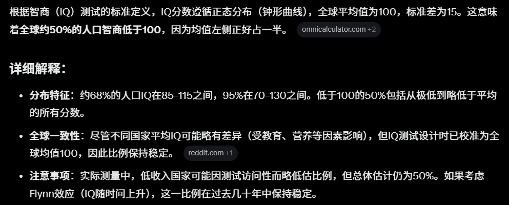
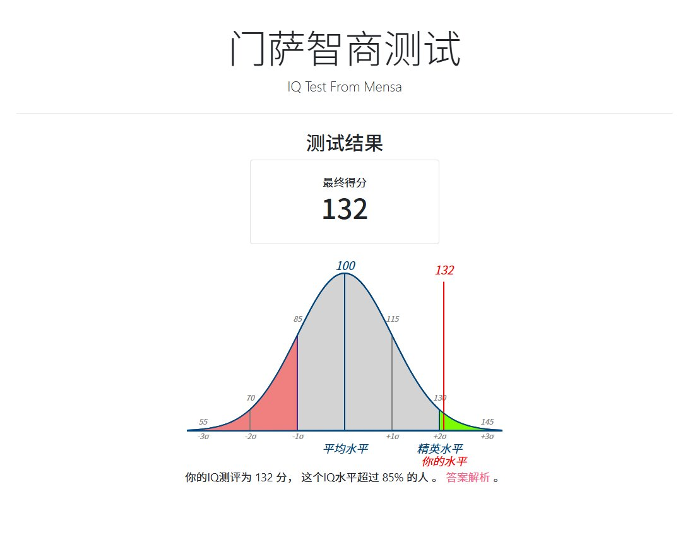

Cbscfe
@Cbscfe
其实智力测试每十年校准一次
以确保智力平均数是100
他从来都只是相对值


Crypto_Painter
@CryptoPainter
再加一个辅助数据，全球智商低于100的人口占比约50%...
也就是说，其实你生活中见到的一半以上的人群，智商都低于100，虽然80~100的智商并不会影响人的正常生活，但如果你有机会和这些人面对面交流，就会感觉莫名的疲惫...
大家没事可以测一测自己的智商，链接 ：https://t.co/iHf6rYbCoD https://t.co/aIzavxsSXP https://t.co/iqSt4kmRjc